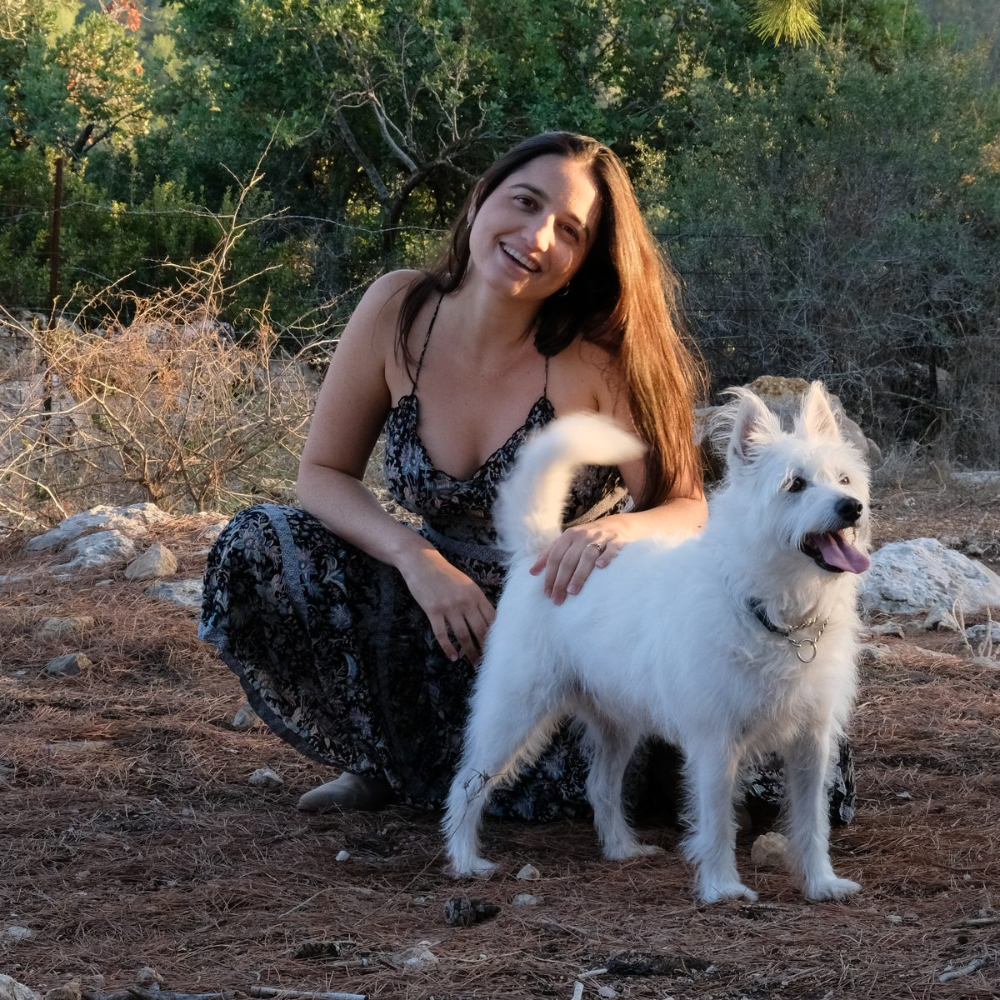

8.3

למצוא את האיזון שבדרך
בתחילת הדרך שלי כמטפלת חשבתי שבריאות היא ״הכל או כלום״ – שאם לא אקפיד ב-100% על תזונה, תוספים וטיפולים, ואפנה עבורם את כל הלו״ז שלי, זה פשוט לא יעבוד. עם הזמן הבנתי שנוקשות כזו רק מייצרת סטרס, ושחוסר גמישות מביא איתו התמודדויות נוספות.
היום הגישה שלי היא להתחיל בצעדים קטנים, לשלב הרגלים נכונים ולהתאים אותם לאורח החיים, כך שתתאפשר התמדה אמיתית. עבורי, בריאות היא לדעת להזין את הגוף במה שהוא צריך – אבל גם לדעת ליהנות מאוכל שמחוץ לתפריט בלי רגשות אשמה, לצאת לבלות ולעסוק בפעילות גופנית שעושה טוב לנשמה.